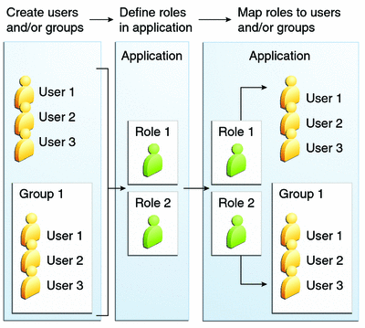

Working with Realms, Users, Groups, and Roles
You often need to protect resources to ensure that only authorized users have access. See Characteristics of Application Security for an introduction to the concepts of authentication, identification, and authorization.
This section discusses setting up users so that they can be correctly identified and either given access to protected resources or denied access if they are not authorized to access the protected resources. To authenticate a user, you need to follow these basic steps.
The application developer writes code to prompt for a user name and password. The various methods of authentication are discussed in Specifying Authentication Mechanisms.
The application developer communicates how to set up security for the deployed application by use of a metadata annotation or deployment descriptor. This step is discussed in Setting Up Security Roles.
The server administrator sets up authorized users and groups on the GlassFish Server. This is discussed in Managing Users and Groups on the GlassFish Server.
The application deployer maps the application’s security roles to users, groups, and principals defined on the GlassFish Server. This topic is discussed in Mapping Roles to Users and Groups.
What Are Realms, Users, Groups, and Roles?
A realm is a security policy domain defined for a web or application server. A realm contains a collection of users, who may or may not be assigned to a group. Managing users on the GlassFish Server is discussed in Managing Users and Groups on the GlassFish Server.
An application will often prompt for a user name and password before allowing access to a protected resource. After the user name and password have been entered, that information is passed to the server, which either authenticates the user and sends the protected resource or does not authenticate the user, in which case access to the protected resource is denied. This type of user authentication is discussed in Specifying an Authentication Mechanism in the Deployment Descriptor.
In some applications, authorized users are assigned to roles. In this situation, the role assigned to the user in the application must be mapped to a principal or group defined on the application server. Figure 39-6 shows this. More information on mapping roles to users and groups can be found in Setting Up Security Roles.
The following sections provide more information on realms, users, groups, and roles.
Figure 39-6 Mapping Roles to Users and Groups
What Is a Realm?
The protected resources on a server can be partitioned into a set of protection spaces, each with its own authentication scheme and/or authorization database containing a collection of users and groups. A realm is a complete database of users and groups identified as valid users of one or more applications and controlled by the same authentication policy.
The Java EE server authentication service can govern users in multiple realms. The file, admin-realm, and certificate realms come preconfigured for the GlassFish Server.
In the file realm, the server stores user credentials locally in a file named keyfile. You can use the Administration Console to manage users in the file realm. When using the file realm, the server authentication service verifies user identity by checking the file realm. This realm is used for the authentication of all clients except for web browser clients that use HTTPS and certificates.
In the certificate realm, the server stores user credentials in a certificate database. When using the certificate realm, the server uses certificates with HTTPS to authenticate web clients. To verify the identity of a user in the certificate realm, the authentication service verifies an X.509 certificate. For step-by-step instructions for creating this type of certificate, see Working with Digital Certificates. The common name field of the X.509 certificate is used as the principal name.
The admin-realm is also a file realm and stores administrator user credentials locally in a file named admin-keyfile. You can use the Administration Console to manage users in this realm in the same way you manage users in the file realm. For more information, see Managing Users and Groups on the GlassFish Server.
What Is a User?
A user is an individual or application program identity that has been defined in the GlassFish Server. In a web application, a user can have associated with that identity a set of roles that entitle the user to access all resources protected by those roles. Users can be associated with a group.
A Java EE user is similar to an operating system user. Typically, both types of users represent people. However, these two types of users are not the same. The Java EE server authentication service has no knowledge of the user name and password you provide when you log in to the operating system. The Java EE server authentication service is not connected to the security mechanism of the operating system. The two security services manage users that belong to different realms.
What Is a Group?
A group is a set of authenticated users, classified by common traits, defined in the GlassFish Server. A Java EE user of the file realm can belong to a group on the GlassFish Server. (A user in the certificate realm cannot.) A group on the GlassFish Server is a category of users classified by common traits, such as job title or customer profile. For example, most customers of an e-commerce application might belong to the CUSTOMER group, but the big spenders would belong to the PREFERRED group. Categorizing users into groups makes it easier to control the access of large numbers of users.
A group on the GlassFish Server has a different scope from a role. A group is designated for the entire GlassFish Server, whereas a role is associated only with a specific application in the GlassFish Server.
What Is a Role?
A role is an abstract name for the permission to access a particular set of resources in an application. A role can be compared to a key that can open a lock. Many people might have a copy of the key. The lock doesn’t care who you are, only that you have the right key.
Some Other Terminology
The following terminology is also used to describe the security requirements of the Java EE platform:
Principal: An entity that can be authenticated by an authentication protocol in a security service that is deployed in an enterprise. A principal is identified by using a principal name and authenticated by using authentication data.
Security policy domain, also known as security domain or realm: A scope over which a common security policy is defined and enforced by the security administrator of the security service.
Security attributes: A set of attributes associated with every principal. The security attributes have many uses: for example, access to protected resources and auditing of users. Security attributes can be associated with a principal by an authentication protocol.
Credential: An object that contains or references security attributes used to authenticate a principal for Java EE services. A principal acquires a credential upon authentication or from another principal that allows its credential to be used.
Managing Users and Groups on the GlassFish Server
Follow these steps for managing users before you run the tutorial examples.
To Add Users to the GlassFish Server
- Start the GlassFish Server, if you haven’t already done so.
Information on starting the GlassFish Server is available in Starting and Stopping the GlassFish Server.
- Start the Administration Console, if you haven’t already done so.
To start the Administration Console, open a web browser and specify the URL http://localhost:4848/. If you changed the default Admin port during installation, type the correct port number in place of 4848.
- In the navigation tree, expand the Configurations node, then expand the server-config node.
- Expand the Security node.
- Expand the Realms node.
- Select the realm to which you are adding users.
- Select the file realm to add users you want to access applications running
in this realm.
For the example security applications, select the file realm.
The Edit Realm page opens.
- Select the admin-realm to add users you want to enable as system administrators
of the GlassFish Server.
The Edit Realm page opens.
You cannot add users to the certificate realm by using the Administration Console. In the certificate realm, you can add only certificates. For information on adding (importing) certificates to the certificate realm, see Adding Users to the Certificate Realm.
- Select the file realm to add users you want to access applications running
in this realm.
- On the Edit Realm page, click the Manage Users button.
The File Users or Admin Users page opens.
- On the File Users or Admin Users page, click New to add
a new user to the realm.
The New File Realm User page opens.
- Type values in the User ID, Group List, New Password, and Confirm New
Password fields.
For the Admin Realm, the Group List field is read-only, and the group name is asadmin. Restart the GlassFish Server and Administration Console after you add a user to the Admin Realm.
For more information on these properties, see Working with Realms, Users, Groups, and Roles.
For the example security applications, specify a user with any name and password you like, but make sure that the user is assigned to the group TutorialUser. The user name and password are case-sensitive. Keep a record of the user name and password for working with the examples later in this tutorial.
- Click OK to add this user to the realm, or click Cancel to quit without saving.
Setting Up Security Roles
When you design an enterprise bean or web component, you should always think about the kinds of users who will access the component. For example, a web application for a human resources department might have a different request URL for someone who has been assigned the role of DEPT_ADMIN than for someone who has been assigned the role of DIRECTOR. The DEPT_ADMIN role may let you view employee data, but the DIRECTOR role enables you to modify employee data, including salary data. Each of these security roles is an abstract logical grouping of users that is defined by the person who assembles the application. When an application is deployed, the deployer will map the roles to security identities in the operational environment, as shown in Figure 39-6.
For Java EE components, you define security roles using the @DeclareRoles and @RolesAllowed metadata annotations.
The following is an example of an application in which the role of DEPT-ADMIN is authorized for methods that review employee payroll data, and the role of DIRECTOR is authorized for methods that change employee payroll data.
The enterprise bean would be annotated as shown in the following code:
import javax.annotation.security.DeclareRoles;
import javax.annotation.security.RolesAllowed;
...
@DeclareRoles({"DEPT-ADMIN", "DIRECTOR"})
@Stateless public class PayrollBean implements Payroll {
@Resource SessionContext ctx;
@RolesAllowed("DEPT-ADMIN")
public void reviewEmployeeInfo(EmplInfo info) {
oldInfo = ... read from database;
// ...
}
@RolesAllowed("DIRECTOR")
public void updateEmployeeInfo(EmplInfo info) {
newInfo = ... update database;
// ...
}
...
}For a servlet, you can use the @HttpConstraint annotation within the @ServletSecurity annotation to specify the roles that are allowed to access the servlet. For example, a servlet might be annotated as follows:
@WebServlet(name = "PayrollServlet", urlPatterns = {"/payroll"})
@ServletSecurity(
@HttpConstraint(transportGuarantee = TransportGuarantee.CONFIDENTIAL,
rolesAllowed = {"DEPT-ADMIN", "DIRECTOR"}))
public class GreetingServlet extends HttpServlet {These annotations are discussed in more detail in Specifying Security for Basic Authentication Using Annotations and Securing an Enterprise Bean Using Declarative Security.
After users have provided their login information and the application has declared what roles are authorized to access protected parts of an application, the next step is to map the security role to the name of a user, or principal.
Mapping Roles to Users and Groups
When you are developing a Java EE application, you don’t need to know what categories of users have been defined for the realm in which the application will be run. In the Java EE platform, the security architecture provides a mechanism for mapping the roles defined in the application to the users or groups defined in the runtime realm.
The role names used in the application are often the same as the group names defined on the GlassFish Server. Under these circumstances, you can enable a default principal-to-role mapping on the GlassFish Server by using the Administration Console. The task To Set Up Your System for Running the Security Examples explains how to do this. All the tutorial security examples use default principal-to-role mapping.
If the role names used in an application are not the same as the group names defined on the server, use the runtime deployment descriptor to specify the mapping. The following example demonstrates how to do this mapping in the glassfish-web.xml file, which is the file used for web applications:
<glassfish-web-app>
...
<security-role-mapping>
<role-name>Mascot</role-name>
<principal-name>Duke</principal-name>
</security-role-mapping>
<security-role-mapping>
<role-name>Admin</role-name>
<group-name>Director</group-name>
</security-role-mapping>
...
</glassfish-web-app>A role can be mapped to specific principals, specific groups, or both. The principal or group names must be valid principals or groups in the current default realm or in the realm specified in the login-config element. In this example, the role of Mascot used in the application is mapped to a principal, named Duke, that exists on the application server. Mapping a role to a specific principal is useful when the person occupying that role may change. For this application, you would need to modify only the runtime deployment descriptor rather than search and replace throughout the application for references to this principal.
Also in this example, the role of Admin is mapped to a group of users assigned the group name of Director. This is useful because the group of people authorized to access director-level administrative data has to be maintained only on the GlassFish Server. The application developer does not need to know who these people are, but only needs to define the group of people who will be given access to the information.
The role-name must match the role-name in the security-role element of the corresponding deployment descriptor or the role name defined in a @DeclareRoles annotation.